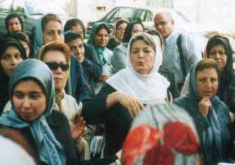

|
|
|
Browsing
Contact Us |
Campaigners |
Face to Face |
Tribune |
Interview |
News |
On the Web |
One Million |
Report
Farsi | Français | German | Italian | Spanish | العربية Also in this section
|
 Release Campaign Members Bahareh Hedayat and Amir Yaghoub-AliFriday 27 July 2007 By: Khadijeh Moghaddam Translated by: Roja Bandari Bahareh Hedayat is the symbol of the bond between the women’s movement and the student movement and is an active member of the One Million Signatures Campaign. Bahareh was imprisoned on the 18th of Tir (July 9th) and remains in Evin prison. She was arrested while staging a sit-in protest in front of Amir Kabir University. This 6-person peaceful protest was intended to commemorate the student uprising of 18th of Tir 1999 and protest the continued detention of students from Amir Kabir University, who had been arrested in May. On the 20th of Tir, (July 11th) Amir Yaghoub-Ali was arrested while collecting signatures on a hot afternoon in Andishe Park, in support of the Campaign. He is also detained in Section 209 of Evin prison today. These days I keep thinking to myself, what are Bahareh and Amir thinking about in prison right now? Are they thinking about their mothers? Their families? Their friends? About their principles? Their own fate? The injustices perpetrated against them? About the future of their country?... I’m sure they are thinking about all of these in the small cement prison room and are truly concerned; concerned for their families, for themselves, for their country and concerned for justice and humanity, which today are like these two young members of the Campaign, chained and imprisoned… I wish Bahareh could hear me so I could tell her: Darling Bahareh, despite the terrible nervous back pains that your mom has been experiencing after your arrest, she is like a lioness who not only manages the home, the children and your dad very well, but also uses all available means to speak out to people and the officials and demand justice for her daughter. She has grown closer than ever to your values. She respects you and your friends in jail and sends her prayers your way. Certainly the positive energy of women, mothers and all the people who are counting down the minutes to your freedom reaches you, helping you to defend your virtuous path of justice and equality with greater determination than ever. Your friends are not leaving your mother alone and are with great commitment working for your freedom. More people join the Campaign every day and we all continue to work with greater resolve. Dear Bahareh, I had the chance to get to know you on many occasions. I remember that on those occasions—in the peaceful demonstration in support of women’s rights in Haft-e Tir Square, in the office of The Alumni Organizaiton of Iran (Sazemane Danesh- Amookhtegan Advare Tahkim Vahdat) where a meeting in commemoration of the anniversary of Khordad 22nd (June 12th) the day of solidarity for Iranian women was held, and in the many meetings of the Campaign—I kept thinking to myself: "My God! This young girl has such passion and wisdom!" And, I thought to myself how fortunate our country is to have women and girls like you and of course how unfortunate are those whose sleeping conscience prevents them from understanding and accepting treasures, such as yourself and other young Iranians. These days when I remember Amir I wish I could tell him: My son, you have taught a great lesson to all the men of our land, Iran: that “manliness is in siding with justice” –even if you must divide with your sisters the “share” that has been granted to you in the discriminatory laws –even if you must be one of the first people who takes the steps toward demanding justice and equality yourself. I don’t know if those who shackled you know that your efforts are for the well-being of their children too. But I know that you will stand by your efforts for equality with all your heart and with your usual dignity and composure. I wish I could tell Amir: "your friends celebrated your 20th birthday with your family. Your birthday is indeed a celebration for us and all the Iranian people since you are the son of our whole nation. It’s not surprising that the security police of the 104 station, who initially arrested you, do not believe that a 20-year-old boy, a junior student in the Allameh Tabatabai’e University, was speaking to people about discriminatory laws against women in the heat of summer; that he was asking people to change their destiny by simply signing a petition asking for equal rights for women. They can’t understand your commitment, because they can’t understand that you have committed your youth to achieving such valuable goals. I wish there was someone who would hear what we have to say. I would ask: "in the name of what crime do you detain our children? They are the precious daughters and sons of this nation who truly have both education and dedication. They are studying in the most respectable universities in order to further their education and help the development of their country. They have dedication—not a blind dedication demanded by government officials who don’t respect even their own laws—but a dedication to women and children and students of this land. I want to tell everyone that no honor is higher for mothers to realize that they have ingrained their justice-loving values in the hearts and souls of their children and now are reaping the rewards of their children’s efforts. I want to cry out and say that as a mother, I have spent months and years full of ups and downs and I have remained faithful to my values of social justice and gender equality. Now I continue my fight along side my children and I will not compromise the rights of the daughters and sons of this nation. So I demand that you release the Campaign’s children at once! |